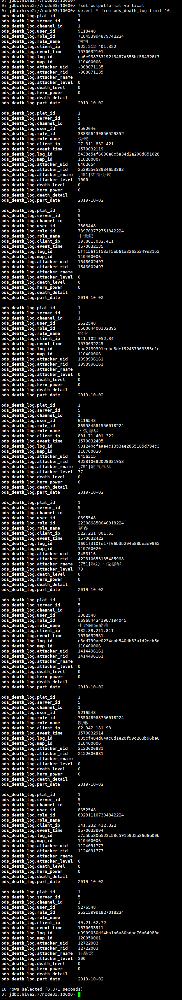
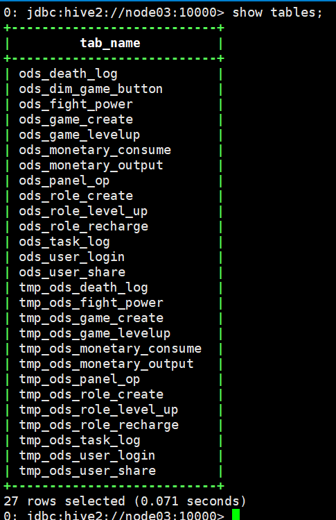
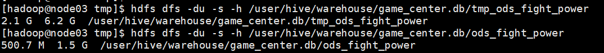

1、常见的etl工具有（多选）：
A flume、sqoop
B maxwell、datax、canal
C logstash
D waterdrop
ABCD
2、实现ODS层建表并完成表数据的加载；查询表“ods\death\log”头10行数据，并截图
如果电脑性能不足，可以适当减少数据量
ODS层“ods\death\log”表的建表及表数据的加载：
vim ods_death_log.sh
#!/bin/bash DBNAME=game_center hive_home=/kkb/install/apache-hive-3.1.2/bin/hive sql=" create database if not exists game_center; use game_center; CREATE TABLE if not exists ods_death_log( plat_id string comment '平台id', server_id int comment '服务器ID ', channel_id string comment '渠道ID ', user_id string comment '用户ID ', role_id string comment '角色ID ', role_name string comment '角色名称 ', client_ip string comment '客户端IP ', event_time int comment '事件时间 ', log_id string comment '日志ID', map_id int comment '地图ID', attacker_uid string comment '凶手用户ID/怪物id ', attacker_rid string comment '凶手角色ID/怪物id ', attacker_rname string comment '凶手/怪物名称', attacker_level int comment '凶手/怪物等级', death_level int comment '死亡等级', hero_power bigint comment '当前玩家战斗力或者伤害', death_detail string comment '死亡详细' ) comment '玩家死亡日志' PARTITIONED BY(part_date date) ROW FORMAT DELIMITED FIELDS TERMINATED BY '\t' LINES TERMINATED BY '\n' STORED AS TEXTFILE; CREATE TABLE if not exists tmp_ods_death_log( plat_id string comment '平台id', server_id int comment '服务器ID ', channel_id string comment '渠道ID ', user_id string comment '用户ID ', role_id string comment '角色ID ', role_name string comment '角色名称 ', client_ip string comment '客户端IP ', event_time int comment '事件时间 ', log_id string comment '日志ID', map_id int comment '地图ID', attacker_uid string comment '凶手用户ID/怪物id ', attacker_rid string comment '凶手角色ID/怪物id ', attacker_rname string comment '凶手/怪物名称', attacker_level int comment '凶手/怪物等级', death_level int comment '死亡等级', hero_power bigint comment '当前玩家战斗力或者伤害', death_detail string comment '死亡详细' ) comment '玩家死亡日志-临时表，用于将数据通过动态分区载入ods_death_log中' ROW FORMAT DELIMITED FIELDS TERMINATED BY '\t' LINES TERMINATED BY '\n' STORED AS TEXTFILE; load data local inpath '/kkb/datas/gamecenter/ods_death_log.txt' overwrite into table tmp_ods_death_log; set hive.exec.dynamic.partition=true; set hive.exec.dynamic.partition.mode=nostrict; set hive.exec.max.dynamic.partitions.pernode=1000; insert overwrite table ods_death_log partition(part_date) select plat_id,server_id,channel_id,user_id,role_id,role_name,client_ip,event_time,log_id,map_id,attacker_uid,attacker_rid,attacker_rname,attacker_level,death_level,hero_power,death_detail,from_unixtime(event_time,'yyyy-MM-dd') as part_date from tmp_ods_death_log; " $hive_home -e "$sql"
chmod +x ods_death_log.sh ./ods_death_log.sh
查询“ods\death\log”头10行：
use game_center; !set outputformat vertical select * from ods_death_log limit 10;
查询结果：
 ODS层所有数据建表以及数据加载完成后，show tables;的结果：
 3、使用hdfs命令，提供ods\fight\power确实被压缩变小了的证据，给出命令，及运行截图
hdfs dfs -du -s -h /user/hive/warehouse/game_center.db/tmp_ods_fight_power hdfs dfs -du -s -h /user/hive/warehouse/game_center.db/ods_fight_power
运行结果：
 4、简答题：谈一谈，生产中使用snappy压缩的hive表，如何做到即能使用snappy压缩的优秀性能，又能规避snappy不支持切分的弊端
先建立一个带分区和压缩的最终表表结构， 和一个普通临时表表结构。然后以load方式将原始数据加载到临时表中。最后，开启动态分区和压缩算法，并通过“insert overwirte 最终表 分区字段 select 临时表”的方式将数据插入到最终表中。这样做能够使使用snappy算法压缩hive表后变得可切分的原因是，虽然整张hiave表经snappy算法压缩后不支持split，但在临时表插入最终表的过程中可以通过设置reduce的个数，从而使得最终表中的数据被提前切分成按不同的reduce所产生的数据，然后再分别进行压缩。（尽量保持snappy压缩之后的reduce数据稍小于128M这个块大小，这样会有利提高以后数据使用时的性能）